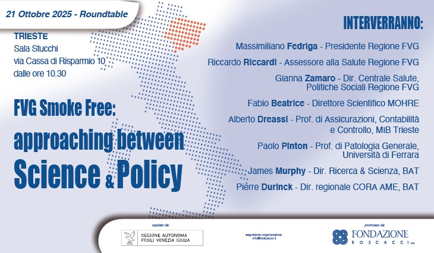

"Momenti di dialogo tra istituzioni, accademia e società civile."
Sala stampa Camera dei Deputati.

Analisi e dibattito sul peso economico e sociale della sanità pubblica.

Seconda edizione del tavolo di confronto istituzionale.

Formazione e sensibilizzazione all'interno delle strutture scolastiche.

Evento per la riduzione del rischio orientato ai decisori locali.

Evento di confronto sulle politiche di prevenzione e riduzione del rischio cardiovascolare.

Sensibilizzazione sui temi strategici, di sicurezza e di difesa nazionale.